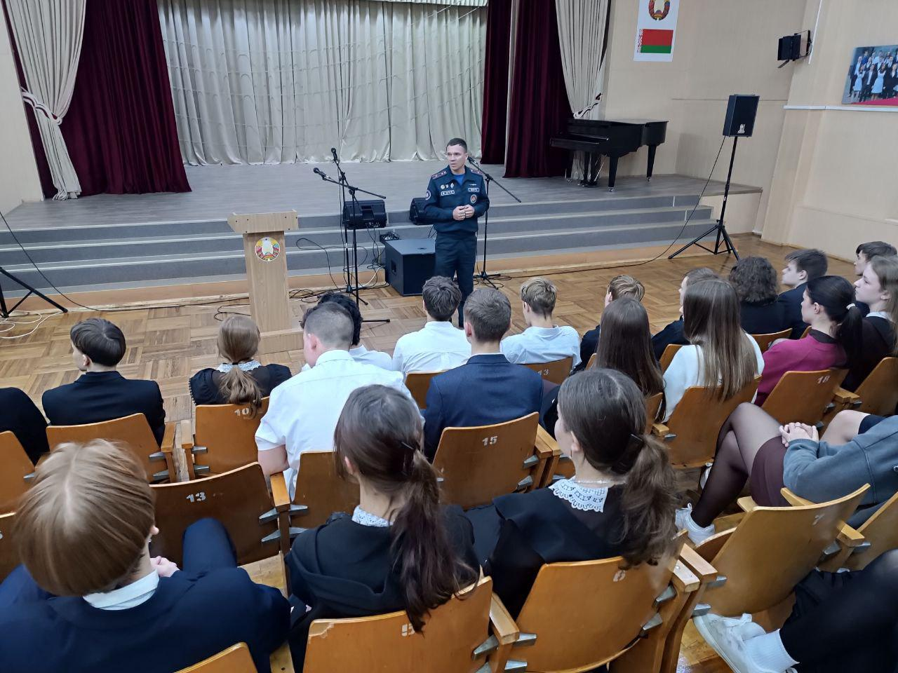
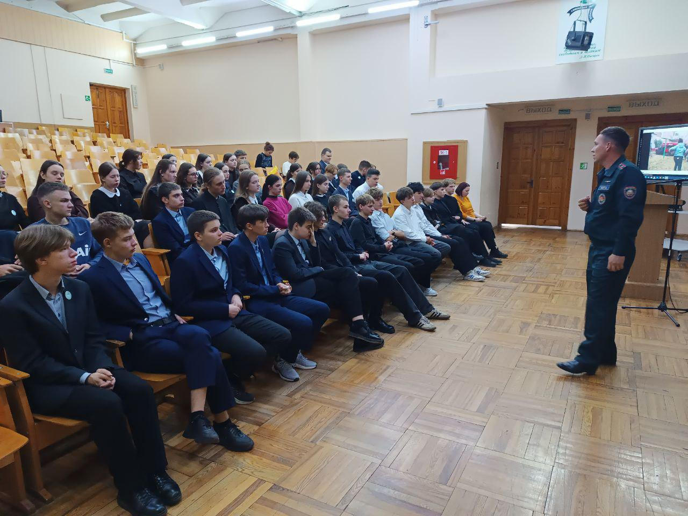
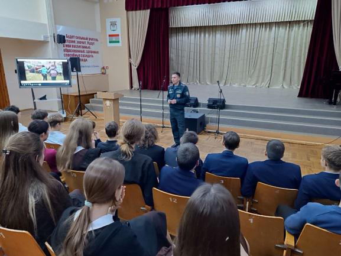
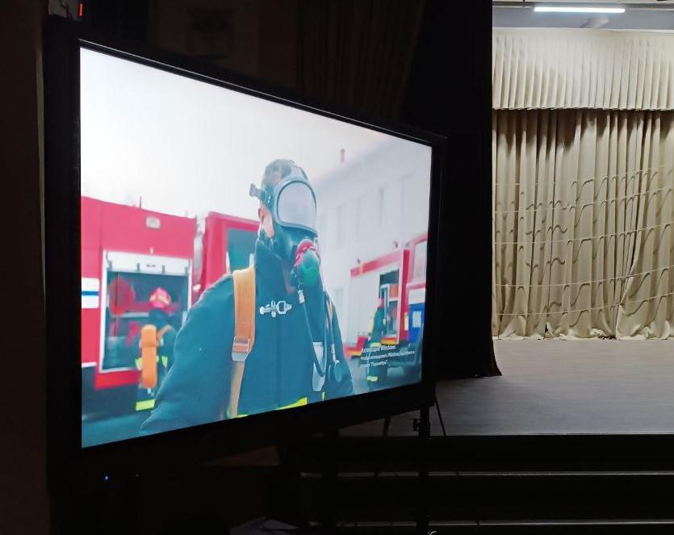

ПРИЗВАНИЕ – СПАСАТЬ ЛЮДЕЙ!
2 сентября состоялась встреча учащихся 11-х классов Государственного учреждения образования «Гимназия №1 г. Борисова» с инспектором по профессиональной подготовке и спорту Борисовского ГРОЧС майором внутренней службы Павлом Вевером.
Павел Владимирович отметил, что спасатель – это не просто профессия. Спасение человека – благородный, ответственный и сложный путь тех, кто по зову сердца избрал профессию спасателя. Эти смелые, мужественные и решительные люди с честью исполняют свой долг перед народом, претворяя в жизнь девиз «Профессионализм. Отвага. Честь».

Одной из главных тем обсуждения стало поступление в Университет гражданской защиты МЧС, а также на службу в Борисовский районный отдел по чрезвычайным ситуациям.
Университет гражданской защиты – это не просто учебное заведение. Это место, где становятся частью большой и важной миссии: быть на страже жизни и здоровья граждан, предотвращать и ликвидировать чрезвычайные ситуации и их последствия, оказывать помощь тем, с кем случилось несчастье и обеспечивать безопасность. За плечами университета весомый опыт подготовки высококвалифицированных специалистов. Сегодня качество предоставляемых образовательных услуг подтверждено отечественными и зарубежными сертификатами соответствия.

Курсанты университета гражданской защиты получают уникальные знания и навыки в области пожарной и промышленной безопасности, ликвидации чрезвычайных ситуаций, а также в вопросах защиты населения и территорий от чрезвычайных ситуаций и гражданской обороны. Университет предлагает современные программы обучения, квалифицированный преподавательский состав и возможность прохождения практики на базе структурных подразделений МЧС.
Университет располагает современной учебно-лабораторной базой, которая представлена более чем 50 специализированными аудиториями и лабораториями, оснащенными современным оборудованием, более чем 200 установками, стендами, макетами и тренажерами, учебно-тренировочными манежем, полигоном оперативно-тактической подготовки, информационно-библиотечным центром МЧС. Большое значение в практическом обучении отведено учебной пожарной аварийно-спасательной части, на вооружении которой состоит специальная, учебная и вспомогательная техника. Дежурные смены подразделения с участием обучающихся ежегодно осуществляют более 500 выездов, из них свыше 300 – на ликвидацию пожаров и других чрезвычайных ситуаций природного и техногенного характера.

В университете созданы все условия для организации и обеспечения полноценного развития обучающихся.

Павел Владимирович, также, довел гимназистам алгоритм поступления в ВУЗ и отметил, что после окончания университета выпускников ждет гарантированное трудоустройство, комфортные условия работы, высокая оплата труда и карьерный рост.